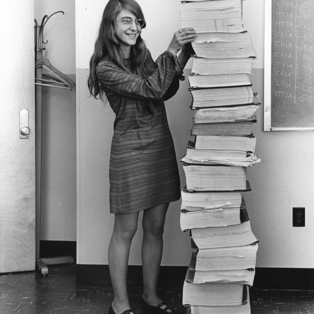
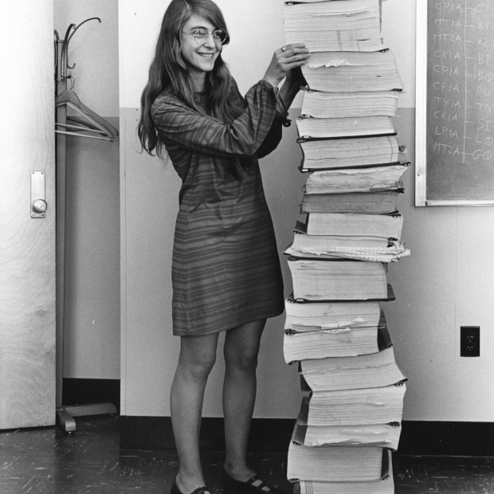

Ada Lovelace, foi uma matemática e escritora inglesa. Hoje é reconhecida principalmente por ter escrito o primeiro algoritmo para ser processado por uma máquina, a máquina analítica de Charles Babbage. Durante o período em que esteve envolvida com o projeto de Babbage, ela desenvolveu os algoritmos que permitiriam à máquina computar os valores de funções matemáticas, além de publicar uma coleção de notas sobre a máquina analítica. Por esse trabalho é considerada a primeira programadora de toda a história.
Margaret Hamilton foi uma cientista da computação, engenheira de software e empresária estadunidense. Foi diretora da Divisão de Software no Laboratório de Instrumentação do MIT, que desenvolveu o programa de voo usado no projeto Apollo 11, a primeira missão tripulada à Lua. O software de Hamilton impediu que o pouso na Lua fosse abortado.
Carol Shaw é uma das principais pioneiras do mercado de games, sendo reconhecida como a primeira mulher desenvolvedora de jogos da história. Primeiro, trabalhou em Polo, jogo de 1978 feito para uma campanha promocional de Ralph Lauren. Em seguida, lançou comercialmente o primeiro jogo feito por uma mulher: o 3-D Tic-Tac-Toe, de 1979. Depois disso, ela entraria na Activision, aonde programaria seu game mais conhecido, River Raid, em 1983.
Grace Hopper foi almirante e analista de sistemas da Marinha dos Estados Unidos nas décadas de 1940 e 1950, criadora da linguagem de programação de alto nível Flow-Matic (em desuso) — base para a criação do COBOL — e uma das primeiras programadoras do computador Harvard Mark I em 1944.
Katie Bouman é uma professora assistente de ciência da computação no Instituto de Tecnologia da Califórnia. Ela pesquisa métodos computacionais para geração de imagens e foi uma das pessoas responsáveis pela reprodução da primeira imagem de um buraco negro. Bouman foi responsável pela liderança e desenvolvimento do algoritmo responsável pelo cruzamento e correção de dados obtidos usando o Event Horizon Telescope
Link para a página do Google